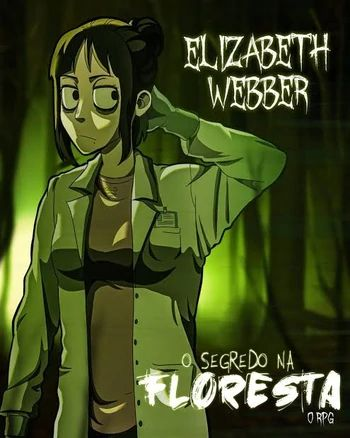
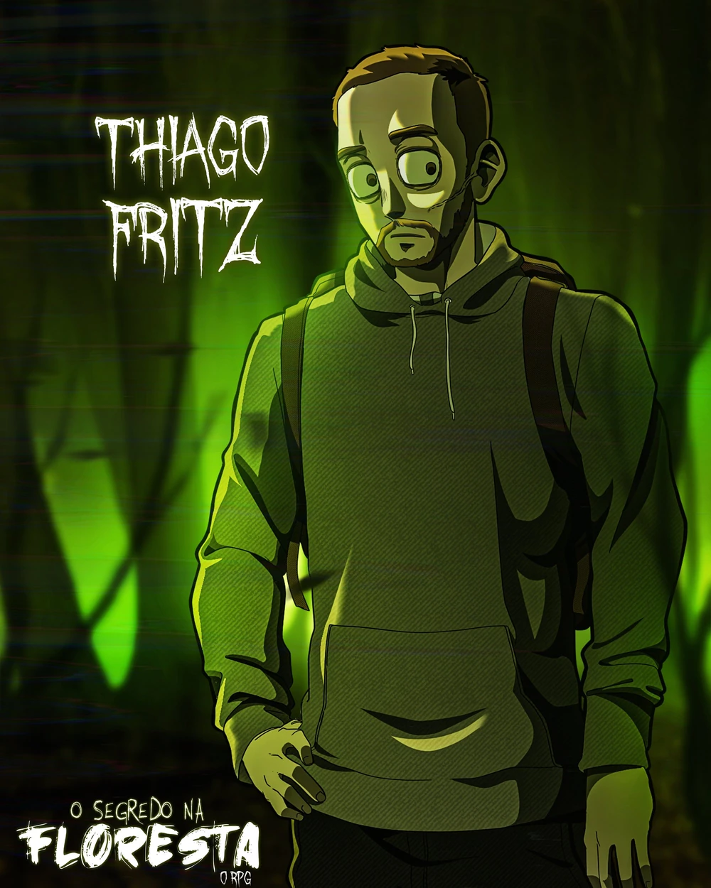
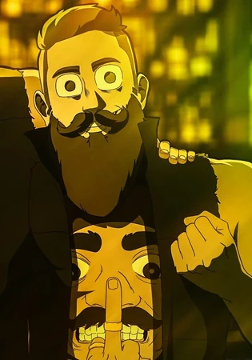
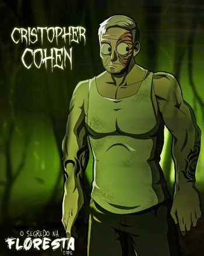
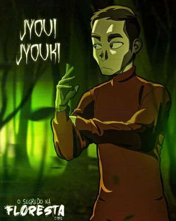
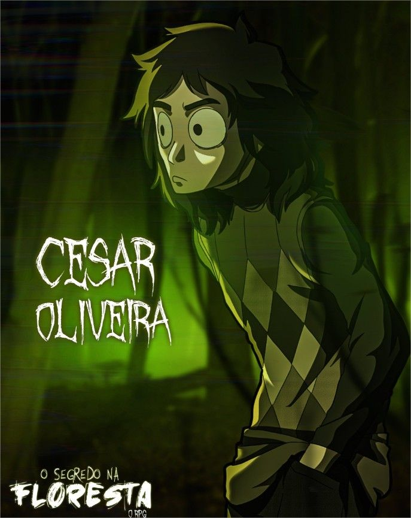

Elizabeth Webber
Elizabeth (ou chamada pela comunidade por Liz), é uma investigadora fascinada pelo paranormal desde que sua antiga equipe morreu. Entretanto, sua coragem misturada com mistério, acaba se tornando o seu maior pesadelo.

Thiago Fritz
Carismático e corajoso, Thiago Fritz é considerado como uma inspiração para a equipe. Mantendo sua resiliência entre o mundo humano e o mundo paranormal, serve de bravura para a equipe. Carregado com um sorriso no rosto e habilidades físicas.

Arthur Cervero
Arthur Cervero é um personagem carismático, leal aos amigos, e dotado de uma grande força interior. Ele é conhecido por sua espontaneidade e bravura em momentos críticos, sempre pronto para agir e proteger aqueles ao seu redor.

Christopher Cohen
Christopher Cohen é um estrategista nato, com um senso de liderança inigualável. Apesar de sua postura reservada, ele é profundamente conectado ao mistério que cerca o mundo paranormal, usando sua inteligência para liderar o grupo.

Joui Jouki
Joui Jouki é um personagem misterioso, cercado por enigmas e segredos do passado. Com um olhar atento e uma mente analítica, ele é conhecido por desvendar os mistérios mais complexos e agir com precisão cirúrgica em situações de perigo.

César Oliveira
Kaiser Oliveira, também conhecido como César, é um homem complexo, lidando com seu passado enquanto enfrenta os desafios do presente. Seu profundo conhecimento do oculto faz dele uma peça-chave no desenrolar dos eventos.